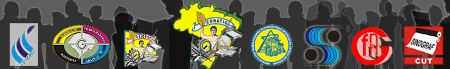

Unidade nacional dos gráficos inicia com o fim da ditadura militar
Conatig completa 21 anos, reafirmando ideais do 7 de fevereiro, através da união e da solidariedade defendida por João da Costa Pimenta
Após dois duros golpes na organização da classe trabalhadora brasileira, por conta da intervenção nos sindicatos pela ditadura civil do Estado Novo (1930-1945) e do Regime Militar (1964-1985), os trabalhadores gráficos iniciaram articulação pela estruturação da categoria na esfera nacional. Na realidade, ainda em 1985, enquanto que o regime autoritário findava, os gráficos demonstraram forte interesse pela construção organizativa. No entanto, o cenário ainda era de transição, com divergências ideológicas e acomodação das centrais sindicais, além de variados problemas regionais, que, reduziram-se ao passar do tempo através do empenho de sindicatos estaduais e da contribuição internacional da categoria, até que, em 1993, é criada a Confederação Nacional dos Trabalhadores Gráficos (Conatig).
O desafio da entidade nacional tem sido grande e o respectivo objetivo de promover a unidade da categoria gráfica brasileira tem ocorrido justamente neste processo de construção e consolidação ao longo das duas décadas. Nesta perspectiva, é por meio da unidade, que a categoria se torna capaz de enfrentar coletivamente os desafios impostos pelas políticas neoliberais e globalização do capital. O gráfico passou a combater a fragmentação imposta à organização dos trabalhadores nestes 20 anos, inclusive, tem realizado ações na intenção de instituir o Contrato Coletivo de Trabalho Nacional. A iniciativa é resultante do apoio de órgãos internacionais dos gráficos para fortalecer a categoria na esfera brasileira, com destaque para a UNI Sindicato Global – Gráficos.
A unificação nacional dos gráficos já se tornou realidade. A consolidação dessa nova etapa de organização ocorreu em 2005, com a realização do Congresso Nacional da Categoria Gráfica, em Praia Grande (SP). No entanto, os problemas também se fortalecem diante da incapacidade do modelo capitalista em atender as necessidades sociais. Assim, ficou evidente que a melhor fórmula contra a opressão do capital é a união e a solidariedade de classe. Esta é única perspectiva capaz de construir uma correlação de força necessária para alicerçar o combate contra o poderio político-econômico do famigerado modelo financeiro global.
A compreensão sobre a necessidade da unidade e solidariedade avança gradativamente, transformando a luta de cada sindicato na luta de todos gráficos brasileiros. Este entendimento tem sido estimulado e fortalecido pela Conatig, por meio do amadurecimento dos dirigentes nos estados, os quais têm influenciado positivamente na organização. Neste sentido, a categoria tem oportunizado novas frentes de combate em sua defesa, a exemplo do enquadramento sindical do trabalhador. A representação sindical dos gráficos, conquista que remonta a greve de 1923, tem sido ameaçado pelo avanço tecnológico. A impressão digital tem aberto um nefasto precedente para outros sindicatos tentar enquadrar funcionários de pequenas gráficas de informática digital, as gráficas rápidas, em outras categorias. O cenário tem demandado ação jurídica concentrada para garantir aos gráficos o direito de continuarem representados pelos sindicatos gráficos e não por aventureiros que visam apenas a questão financeira. Também se tem investido em estudos e em medidas pela segurança no trabalho, além de estimular uma interação maior entre os gráficos, contribuindo, inclusive, para o êxito de diversos movimentos paredistas em várias partes do país.
Porém, será necessária uma participação ainda maior da categoria para continuar avançando em busca da consolidação coletiva de ações em defesa da melhoria nas condições de vida e salário do trabalhador e pela dignidade do ser humano. É de fundamental importância seguir lutando e organizando os gráficos brasileiros. Este é um dever de todos os dirigentes sindicais presentes nos quatro cantos do país. Neste viés, a Conatig reafirma a postura combativa de luta da categoria, saudando todos pela passagem dos 90 anos do 7 de fevereiro, e convocando os gráficos brasileiros para trabalhar pela união e solidariedade da classe.